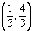
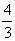
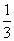
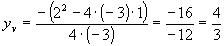
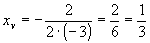

Item 16:

são as coordenadas do ponto máximo de
A afirmativa que está sendo feita é que a ordenada do vértice é

e a abcissa do vértice é
(Clique aqui e veja as expressões para este cálculo). Façamos esta verificação:

Conclusão: A afirmativa do item 16 é verdadeira.
 Voltar
Voltar